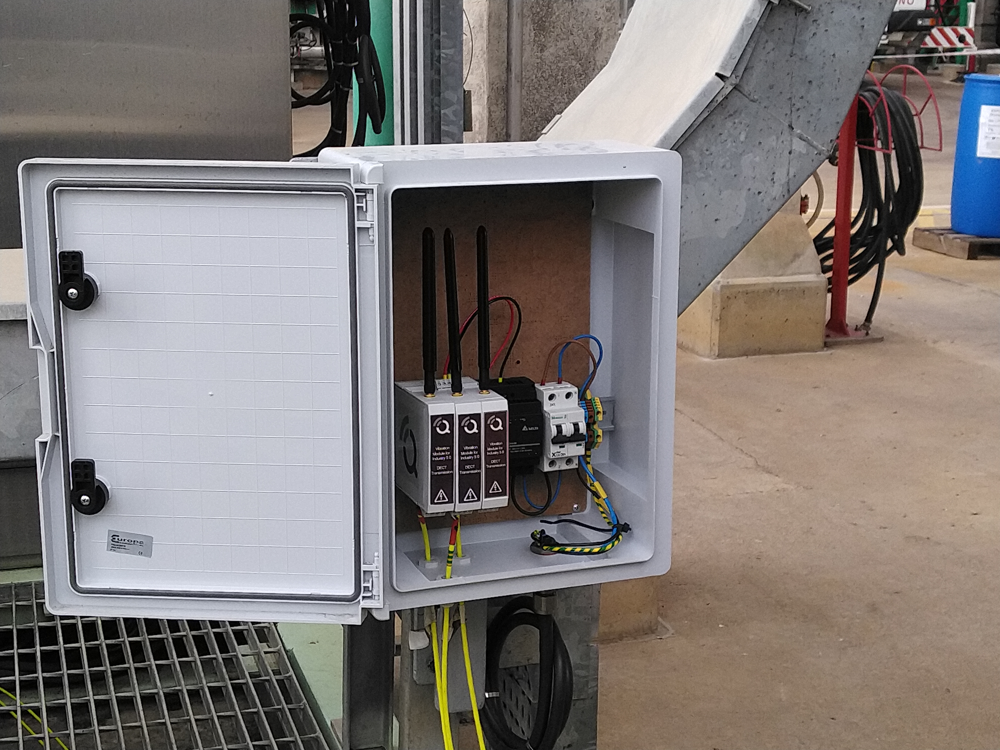
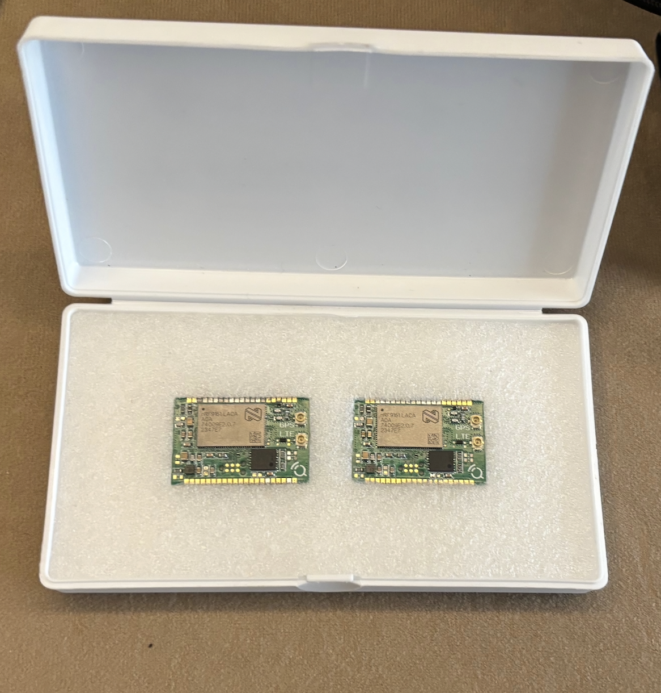

Industrie
Surveillance des machines, des processus, des utilitaires et des actifs où les données doivent coexister avec le fonctionnement de l'usine.
Qartia conçoit et déploie des solutions de sensorisation pour les environnements industriels, environnementaux, agricoles et civils, en adaptant le système de mesure à la réalité opérationnelle de chaque projet.
Cette ligne intègre une sélection de capteurs, d'électronique, d'alimentation, de connectivité, de protection mécanique et de visualisation des données. L’objectif est de capter des informations fiables sur le terrain et d’en faire une base solide pour la surveillance, les alertes, la maintenance prédictive ou l’aide à la décision.
Nous ne travaillons pas uniquement avec le capteur. Nous concevons l'ensemble complet : support, boîtier, alimentation, communications, logique de capture et plateforme afin que le système puisse être maintenu, mis à l'échelle et coexister avec les opérations réelles du client.
Surveillance des machines, des processus, des utilitaires et des actifs où les données doivent coexister avec le fonctionnement de l'usine.
Réseaux de gaz, de particules, de bruit et de variables météorologiques pour une surveillance continue et une visualisation publique ou opérationnelle.
Capteurs de cultures, microclimat, irrigation, rayonnement et exploitation agricole pour le contrôle productif et l'efficacité des ressources.
Conception de coffrets, d'alimentation, de supports et de communications pour l'extérieur, le bruit électrique, l'anti-vandalisme ou les accès complexes.
Qartia fonctionne avec des capteurs industriels, environnementaux et agricoles, intégrant la variable, la plage, la fréquence d'échantillonnage et la logique de fonctionnement dans l'électronique et le micrologiciel compatibles avec l'utilisation finale.
La sensorisation de Qartia ne reste pas en laboratoire. Il est déployé dans une usine, une ville ou un territoire avec de l'énergie, du support, de la trésorerie, un réseau privé et un backhaul prêts pour un service stable dans le temps.


Variables, portée, précision, matérialité et conditions d'utilisation alignées sur le cas réel.
Conception et intégration matérielle pour capturer le signal utile et maintenir la stabilité dans le temps.
Configuration des cycles d'échantillonnage, des alarmes, du conditionnement des données et de la gestion de l'énergie.
Coffrets, supports, anti-vandalisme, intégration de panneaux et présentoirs préparés pour l'extérieur ou les plantes.
LoRa, DECT NR+, 5G, sortie Ethernet et Internet selon couverture, latence et fonctionnement.
Tableaux de bord, cartes, indicateurs et exploitation des données pour l'exploitation, le suivi et la décision.
Règles, seuils et logique événementielle pour transformer la mesure en action opérationnelle.
Architecture prête à démarrer avec un pilote et à évoluer sans refaire l'ensemble du système.
Nous identifions les variables, les conditions de capture, les restrictions d'installation et les objectifs d'exploitation des données.
Nous sélectionnons les capteurs, l'électronique, l'énergie, le boîtier, le réseau privé et la topologie de sortie sur la plateforme.
Nous déployons le nœud, vérifions la couverture, la qualité des données, la stabilité et le comportement dans un environnement réel.
Nous intégrons des tableaux de bord, des alertes et des analyses pour évoluer du réseau pilote au réseau opérationnel.
Nous pouvons vous aider à définir la variable, à choisir la technologie, à intégrer les communications et à laisser la capture de données prête à être exploitée.
